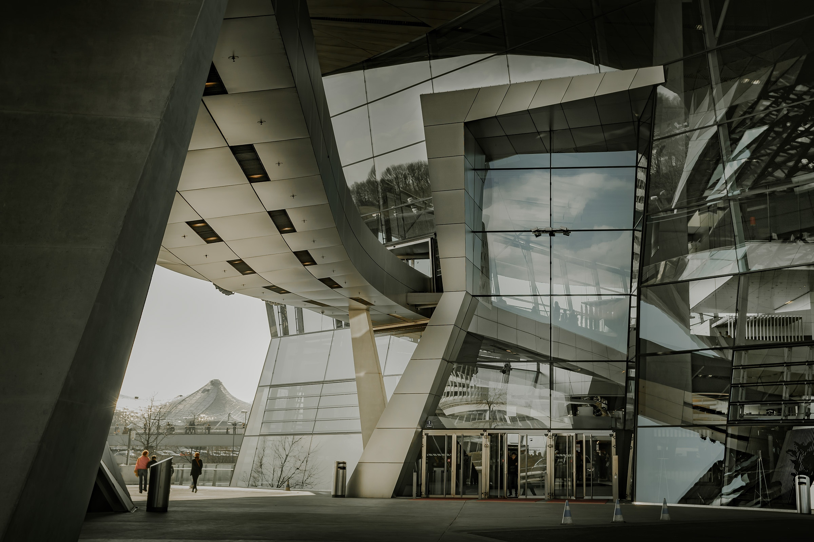
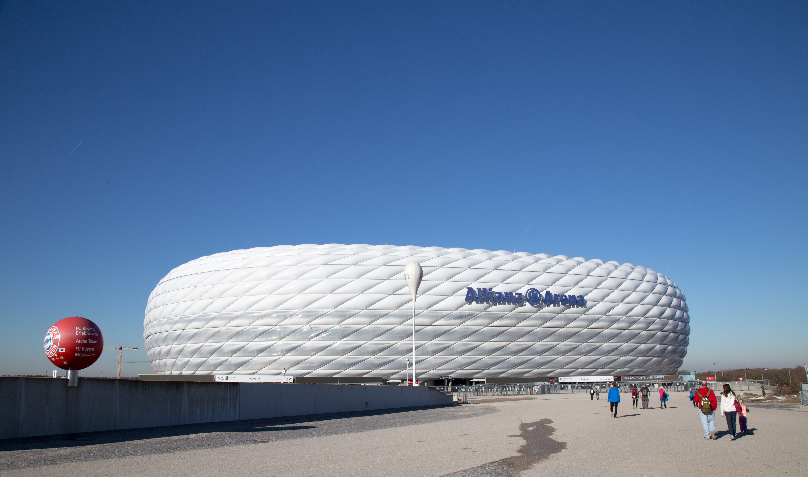
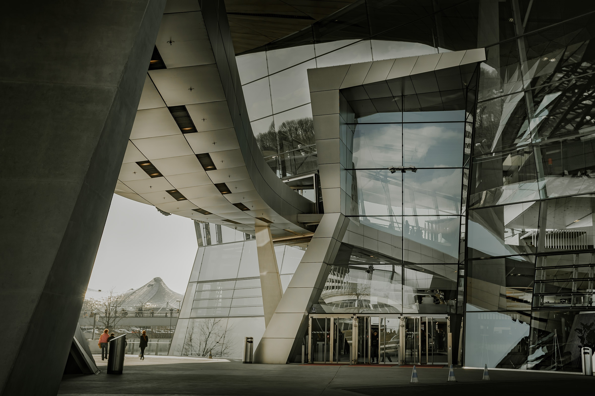
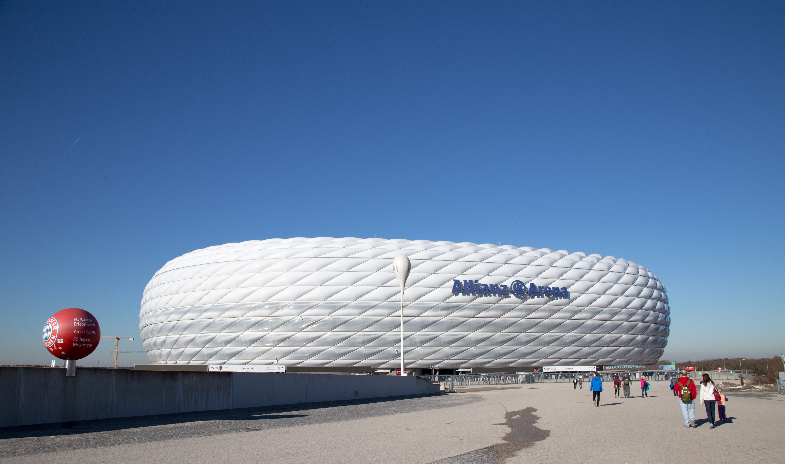

French Exchange


In 2016 i did a French Exchange with a my French Pen Pal. I visited Carcassonne and lived as a French student for 2 weeks. This whole experience was very eye opening in terms of understanding the French Culture.
Italy Trip


In 2017 i travelled to Italy with my school class. We visited Lake Garda, Milan, Florence and Venice. We also took cable cars up the alps. The scenery all over Italy was breath taking.
Munich, Germany
 



In November 2018 I visited Munich in Germany. I was intrigued by the architecture of the city. The underground of the city was outstanding. I visited the BMW Museum and The Aviva Stadium which were both amazing pieces of architecture.